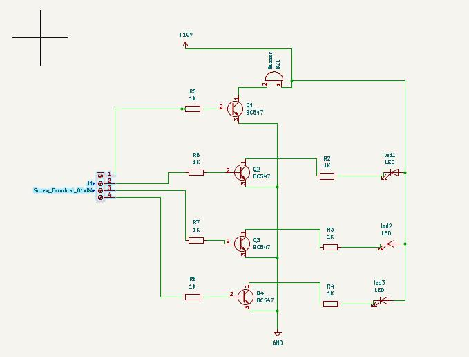
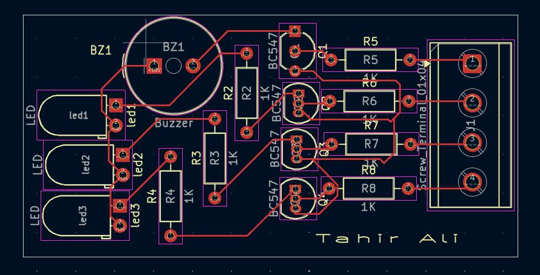

Home / Work / Water Level Indicator
Water Level Indicator PCB

- Tools
- KiCad, Altium Designer
- Layers
- 2
- Sensing
- 4× BC547 stages
- Input
- 4-pin screw terminal
- Indicators
- 3 LEDs + buzzer
- Supply
- 10 V rail
- Date
- March 2026
01The challenge
Four probe inputs, each driving a BC547 stage: as water reaches each probe its stage switches on, lighting a level LED, and the top stage also sounds a buzzer for a full-tank alert on a 10 V rail. The design was carried through both KiCad and Altium Designer.
02My role
- Schematic capture, footprint assignment and layout
- Reconciling footprint libraries and routing engines between KiCad and Altium
- 3D visualization and DRC in both tools
03Engineering approach
- Four BC547 level-detection stages fed from a 4-pin probe terminal.
- Three LED level indicators plus a buzzer on the topmost stage.
- Routing conflicts and footprint mismatches between the two toolchains resolved on the same schematic.
04PCB design
SchematicRouting3D board


05Verification
DRC was cleared in both KiCad and Altium Designer.
06Final output
- Verified layout in both KiCad and Altium Designer
07Project result
The same design carried cleanly through two EDA toolchains, with footprint and routing differences resolved.